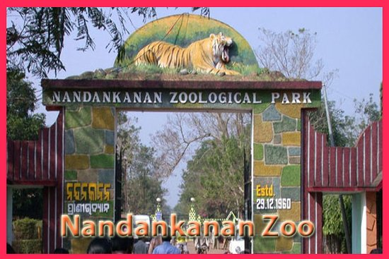

Nandankanan Zoological Park is a 437-hectare (1,080-acre) zoo and botanical garden. Established in 1960, it was opened to the public in 1979 and became the first zoo in India to join World Association of Zoos and Aquariums (WAZA) in 2009. It also contains a botanical garden and part of it has been declared a sanctuary. Nandankanan, literally meaning The Garden of Heaven.
